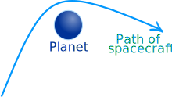
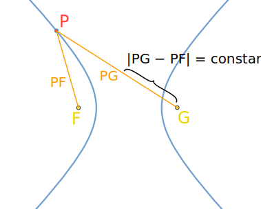
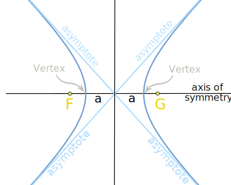
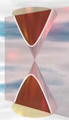
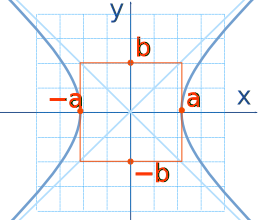
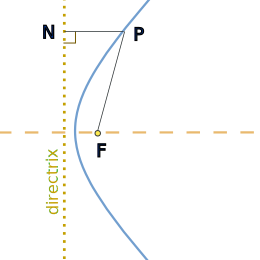
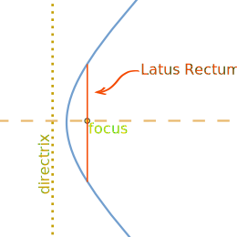
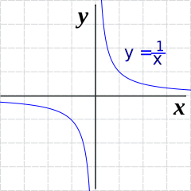

Hyperbola

Did you know that the orbit of a spacecraft can sometimes be a hyperbola?
A spacecraft can use the gravity of a planet to alter its path and propel it at high speed away from the planet and back out into space using a technique called "gravitational slingshot".
If this happens, then the path of the spacecraft is a hyperbola.
(Play with this at Gravity Freeplay)
Definition
A hyperbola is two curves that are like infinite bows.
Looking at just one of the curves:
any point P is closer to F than to G by some constant amount
The other curve is a mirror image, and is closer to G than to F.

In other words, the distance from P to F is always less than the distance P to G by some constant amount. (And for the other curve P to G is always less than P to F by that constant amount.)
As a formula:
|PF − PG| = constant
- PF is the distance P to F
- PG is the distance P to G
- || is the absolute value function (makes any negative a positive)
Each bow is called a branch and F and G are each called a focus.
Have a try yourself:
Try moving point P: what do you notice about the lengths PF and PG ?
Also try putting point P on the other branch.
There are some other interesting things, too:

On the diagram you can see:
- an axis of symmetry (that goes through each focus)
- two vertices (where each curve makes its sharpest turn)
- the distance between the vertices (2a on the diagram) is the constant difference between the lengths PF and PG
- two asymptotes which are not part of the hyperbola but show where the curve would go if continued indefinitely in each of the four directions
And, strictly speaking, there is also another axis of symmetry that goes down the middle and separates the two branches of the hyperbola.
Conic SectionYou can also get a hyperbola when you slice through a double cone. The slice must be steeper than that for a parabola, but does not So the hyperbola is a conic section (a section of a cone). |
 |
Equation
By placing a hyperbola on an x-y graph (centered over the x-axis and y-axis), the equation of the curve is:
x2a2 − y2b2 = 1

Also:
One vertex is at (a, 0), and the other is at (−a, 0)
The asymptotes are the straight lines:
- y = (b/a)x
- y = −(b/a)x
(Note: the equation is similar to the equation of the ellipse: x2/a2 + y2/b2 = 1, except for a "−" instead of a "+")
Eccentricity
Any branch of a hyperbola can also be defined as a curve where the distances of any point from:
- a fixed point (the focus), and
- a fixed straight line (the directrix) are always in the same ratio.

This ratio is called the eccentricity, and for a hyperbola it is always greater than 1.
The eccentricity (usually shown as the letter e) shows how "uncurvy" (varying from being a circle) the hyperbola is.

On this diagram:
- P is a point on the curve,
- F is the focus and
- N is the point on the directrix so that PN is perpendicular to the directrix.
The eccentricity is the ratio PF/PN, and has the formula:
e = √(a2+b2)a
Using "a" and "b" from the diagram above.
Latus Rectum
|  | The Latus Rectum is the line through the focus and parallel to the directrix. The length of the Latus Rectum is 2b2/a. |
1/x

The reciprocal function y = 1/x is a hyperbola!